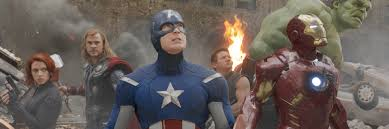
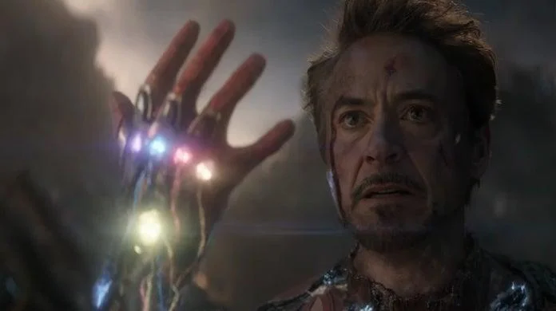

About Iron Man
Iron Man was a billionaire and former CEO of Stark Industries who changed his ways after escaping being held hostage by the Ten Rings in Afghanistan. He escaped by making a suit which had weapons. He upgraded the the suit many times. He later joined the Avengers and fought various threats. In 2023, he sacrified his life by wielding a nanotech version of the Infinity Gauntlet to save the universe.

(Top) Iron Man in New York, 2012 (Bottom) Iron Man snapping the gauntlet to end an alternate Thanos's quest to conquer the universe
Iron Man's Powers
- Superhuman Abilites
- Flight
- Holographic HUD using J.A.R.V.I.S. or F.R.I.D.A.Y.
Iron Man's Friends
Iron Man had many friends being a leader of the Avengers.